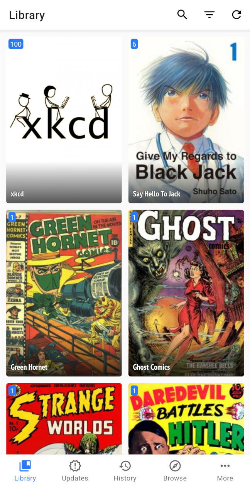
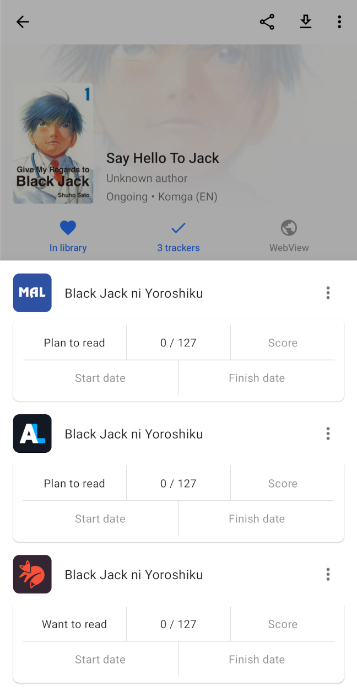
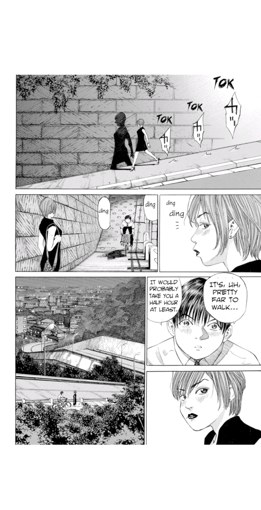

Tachiyomi
Free and open source manga reader for Android
Extensions
Online and offline reading from over a thousand sources
Tracking
Automatically keep track of your manga with MyAnimeList, AniList, Kitsu, Shikimori, and Bangumi
Customization
A configurable reader with multiple reading modes, custom color filters, and other settings
